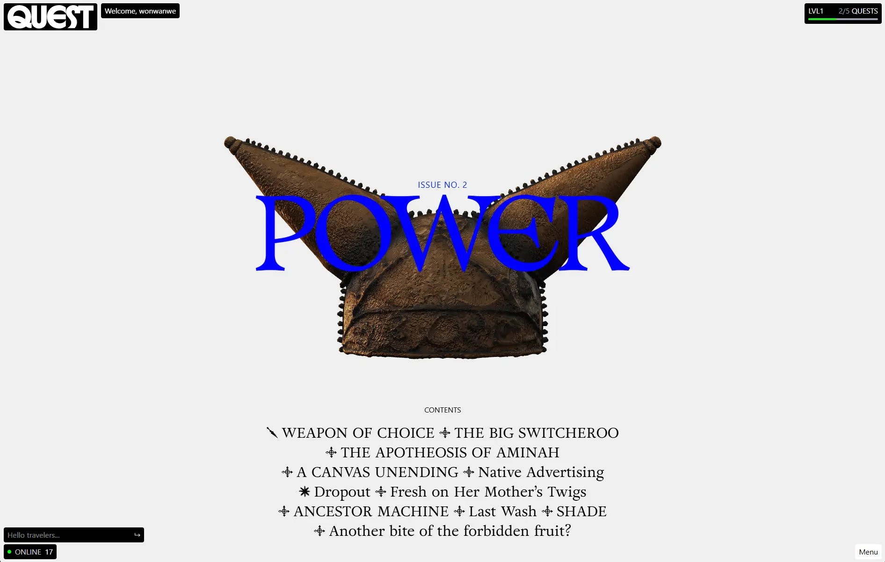

Quest
- Медиа и блог
- Медиа и издательства
- Журнал
- Обычным пользователям
- Дизайнерам
- Брутализм
- Редакционный
- Светлая тема
- Нейтральный фон
- Микроанимации
- Анимация типографики
- SvelteKit
- Sanity
- Adobe Fonts
- Tailwind CSS
- Английский язык
- Действующий сайт

Что это
Сайт онлайн-журнала QUEST о научной фантастике и фэнтези. Первый экран — огромное синее слово POWER поверх фотографии колючего объекта; дальше содержание второго выпуска, статьи и игровая шкала LVL1 / 2/5 QUESTS, которая делает чтение похожим на прохождение квеста. Брутальный сайт журнала о научной фантастике и фэнтези.
Что смотреть в первую очередь
Смотреть огромное синее POWER, набор материалов второго выпуска и игровую шкалу LVL / QUESTS.
Приёмы
- Микроанимации
- Анимация типографики
Интересные факты
- В шапке — чёрный блок с логотипом QUEST, приветствие с именем читателя и счётчик LVL1 2/5 QUESTS.
- Первый экран — огромное синее слово POWER поверх фотографии колючего скульптурного объекта; над ним подпись ISSUE NO. 2.
- Содержание набрано антиквой с орнаментами: Weapon of Choice, The Big Switcheroo, The Apotheosis of Aminah, A Canvas Unending и другие материалы.
- Внизу — приглашение «Another bite of the forbidden fruit?» и блок ONLINE с числом читателей.
- QUEST — журнал, который использует научную фантастику и фэнтези, чтобы говорить о политике, культуре и обществе.
- Чтение превращено в квест: уровень, прогресс и задания; контент приходит из Sanity, сайт собран на SvelteKit.
Паспорт
- Домен
- read.quest
- Тип сайта
- Медиа и блог
- Категории
- Медиа и издательства
- Подкатегории
- Журнал
- Для кого
- Обычным пользователям, Дизайнерам
- Стиль
- Брутализм, Редакционный
- Язык
- Английский
- Страна
- не указано
- Автор
- QUEST
- Год
- не указано
- Добавлен в коллекцию
- 21.11.2026
Палитра
-
#F0F0F0— 86% кадра -
#3B2B20— 5% кадра -
#120D0A— 3% кадра -
#5F4733— 2% кадра -
#0201F8— 2% кадра
- Режим
- Светлая
- Цвет фона
- Нейтральный
Технологии
- SvelteKit
- Sanity
- Adobe Fonts (Typekit)
- Tailwind CSS